2022
THE STRAND CONSERVATORY
a short story on casting the Strand
The Strand Conservatory responds to the architecture of the existing basement with a theatrical proposal that ties the storylines of the Strand Theatre and the surrounding community together through water.
CONTEXT
Core II Studio, MIT SA+P
LOCATION
Strand Theatre, Boston
SOFTWARE + TOOLS
Rhinoceros 3D, Photoshop, Illustrator, 3D printing
COLLABORATOR
L. Sloan Aulgur
SUPERVISORS
Silvia Illia-Sheldahl, Cristina Parreño
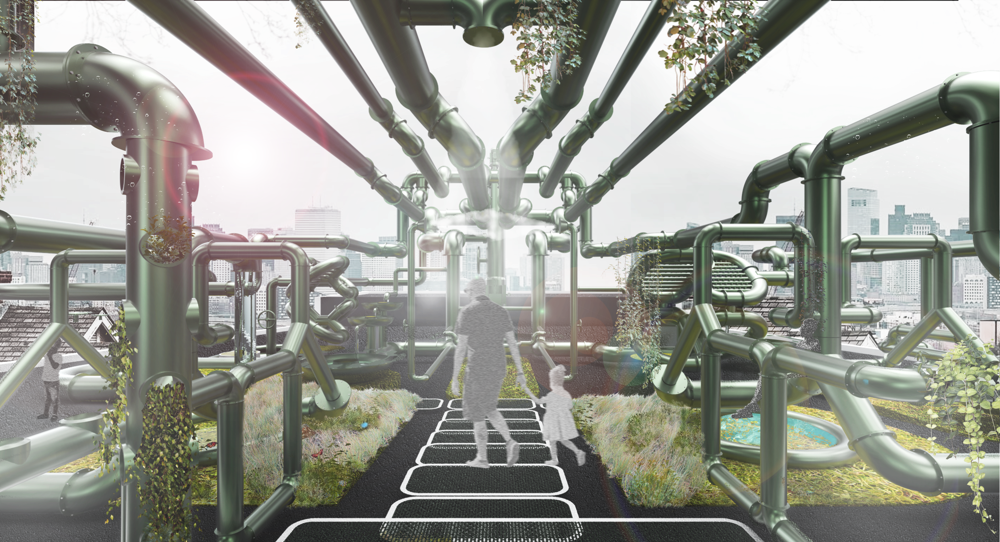
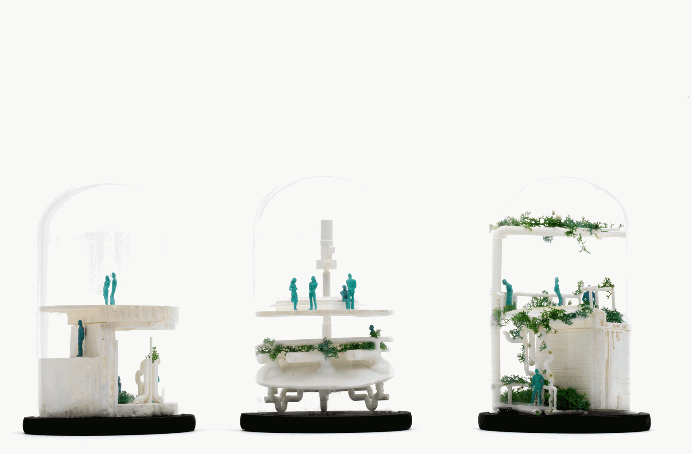
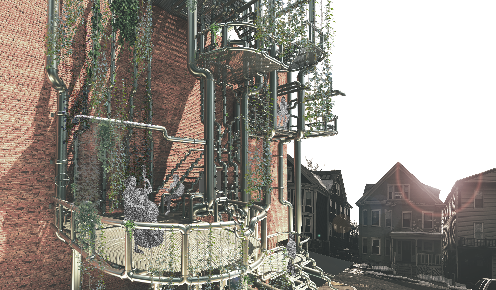
It is a place for performance and art, for the growth of flora and fauna, and for resource conservation—specifically water. The proposal supports both the theatre and the community through separated and interconnected spaces.
By treating water as a shared system, the theatre expands to include aquaponics, soft agriculture, a playscape, and cooling and reflection spaces. The design does not attempt to deny a changing climate; it explores the architectural possibilities that change may create.
Spaces and systems
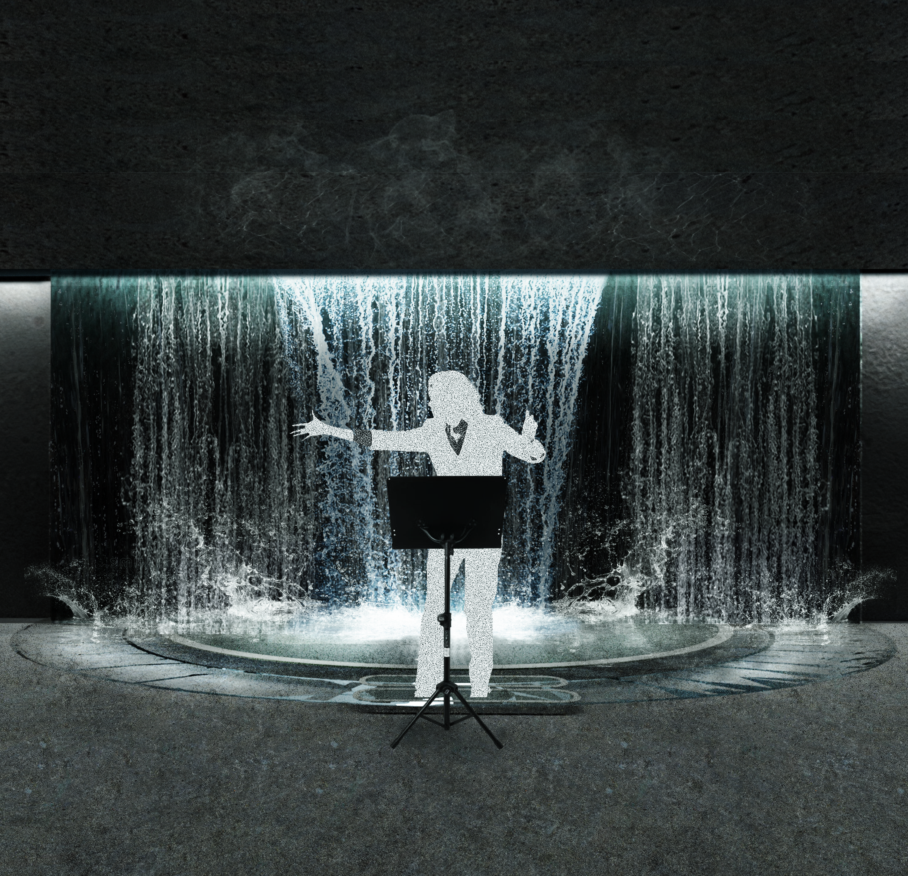
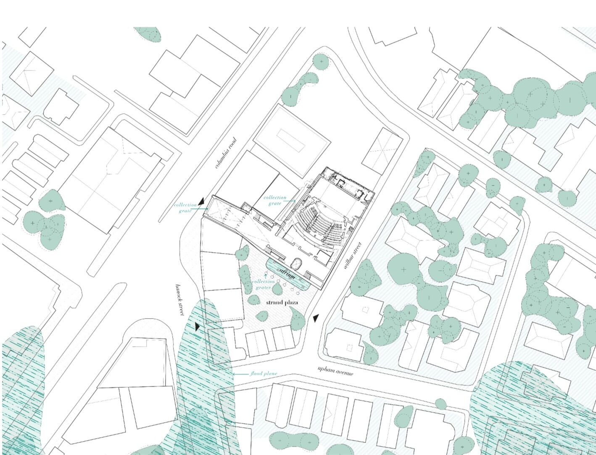
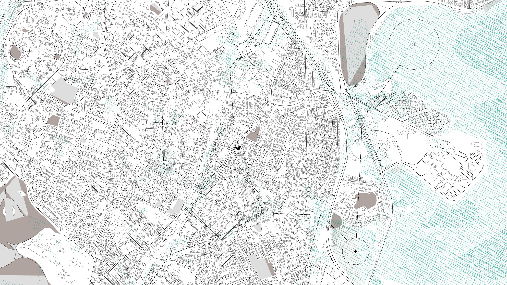

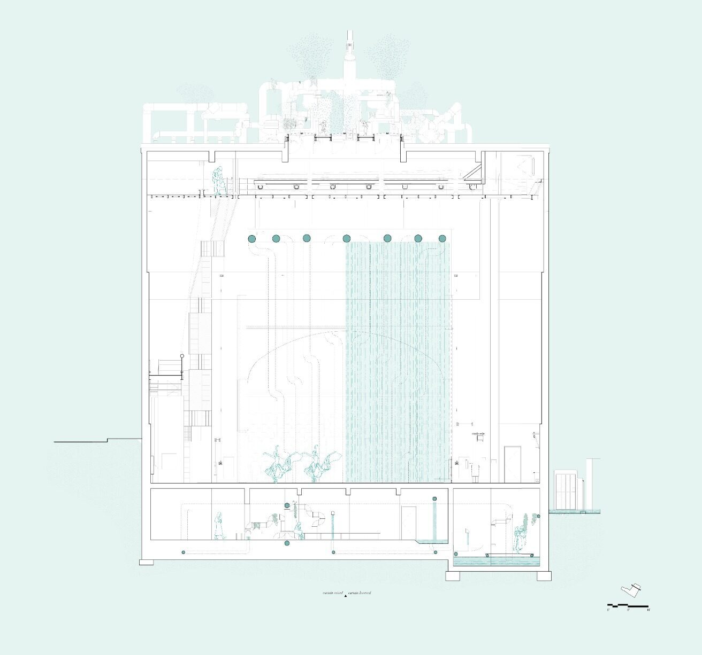
Basement · Hydro-zannine · Roofscape
The basement acts as a cistern and as a place for rehearsals and small gatherings. Hidden within the ceiling, the hydro-zannine offers a vantage point to both the stage and roof activity. At the roofscape, water is shared with the public through pools and mist that cool the community.
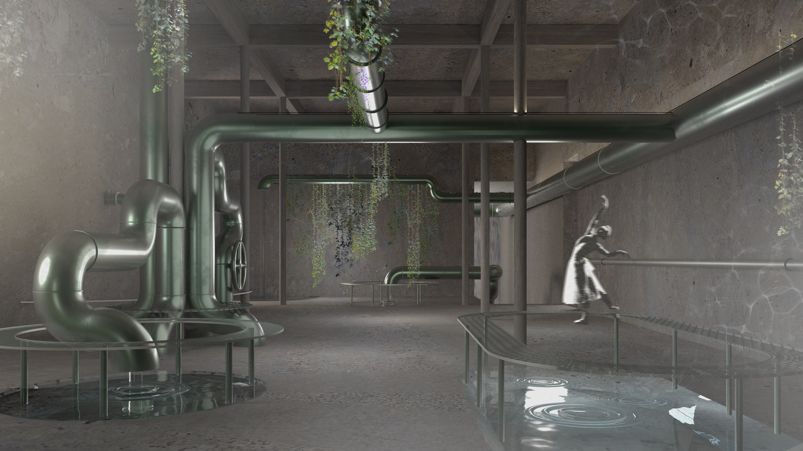
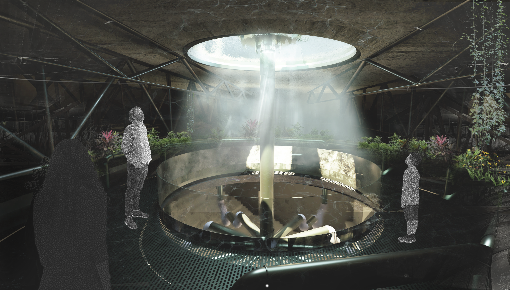
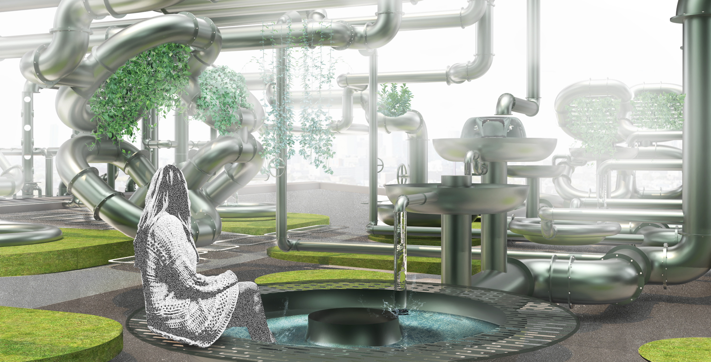
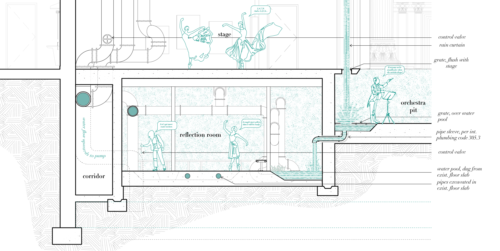
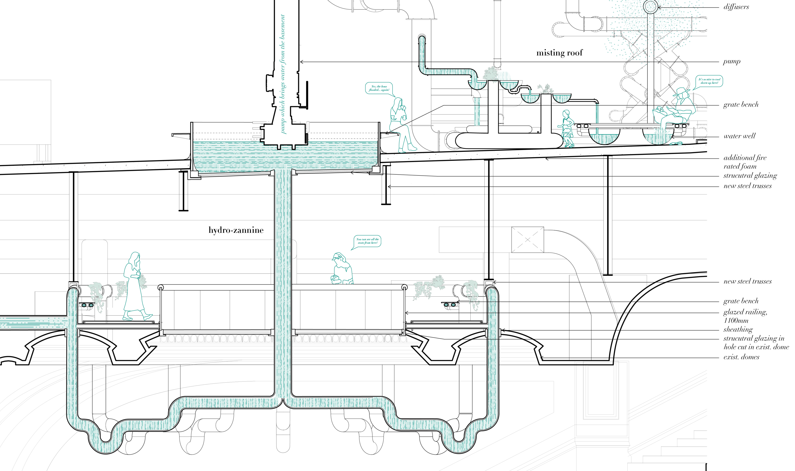
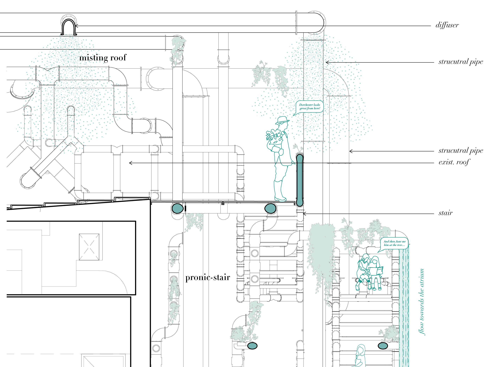
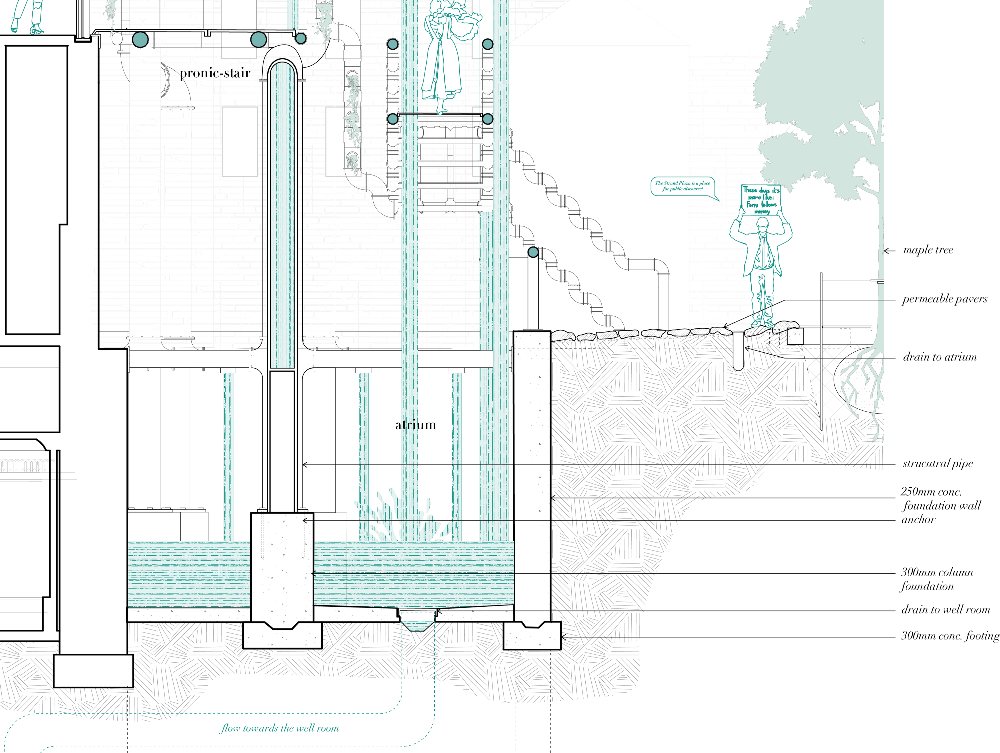
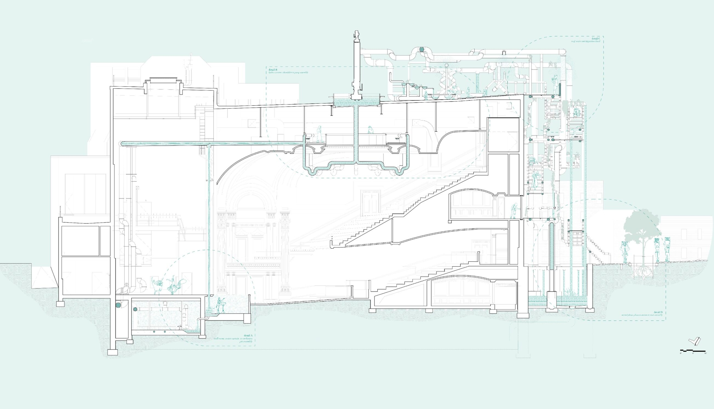